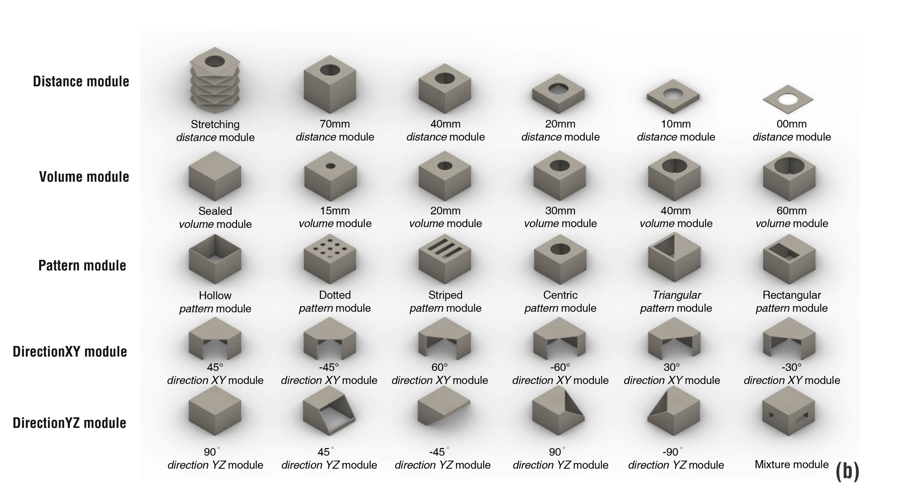

O&O: A DIY toolkit for designing and rapid prototyping olfactory interfaces
O&O (abbreviation of Open-source & Olfaction) can help a wide range of users (from novice to expert) to design and rapidly prototype their own olfactory application ideas. These prototypes can support them in quickly validating ideas, experimenting with them or even using them in real life.
- Role Project Owner
- Director Qi Lu
- Link
INTRODUCTION
Previous work on olfactory interfaces design and development helped explore the possibilities of
using smell
sense in HCI and to engage a broader community to join in the relevant research. However, the design,
implementation, and applications of theseworks are not easily modified or extended. To further lower
the barrier of entry to olfactory interface design and to facilitate rapid prototyping, we propose
O&O,
a modular olfactory interface DIY toolkit. The toolkit contains: Scent Delivery Kit,
supporting most common
vaporization and transmission techniques used in this area; Cardboard Structure Kit,
handling the structures
of different functional modules; Design Manual, assisting design thinking and introducing
the toolkit itself.
We organized a formal workshop with19 participants and four solo DIY trials to evaluate its usability
and to
explore how users engage in olfactory interface design, theircreations using the toolkit in short/long
periods,
and their suggestions for the toolkit. Finally, Design implications were discussed for further
research.

SCENT GENERATION KIT
1 | Driver Modules
The toolkit contains two sets of driver modules for ultrasonic atomizer and components
supporting PWM control
(fan, heater, air pump, motor). All modules support manual and
programcontrol modes. Manual mode means that
users can directly control the modules with passive switches(e.g. buttons), while program mode is
controlled by Arduino programs.
We have both basic (27mm * 33mm) and pro (33mm * 40mm) version of modules for each type of output
components.
To further reduce memory costs, all driver modules have a unified layout with control
ports in the lower-left corner,
power ports in the lower-right corner, and output ports in the upper-right corner. The control ports
of the two basic
modules are identical to the standard IO ports (digital I/O, VCC, GND) of the Arduino module.
2&3 | Optional Accessories & Output Components
The toolkit provides optional accessories including scent sources, control components,
and connection parts to
ease the scent generation process. It also contains four categories of output components:
atomizers,heaters,fans,andair pumps.The project tested
and offered multiple components with various specifications for each category. Users may also adopt their own.
MODULE CONSTRUCTION KIT
1 | Size and Shape

A rich abstraction of modules is crucial for any creation. The toolkit provides four sizes of modules for every application category depicted in the design section (70mm, 40mm, 30mm, 20mm) and provided cardboard templates with various primitive form or self-design options (square, cylinder, flat, polyhedron ,or free-design). Notice: the project proposed the "polyhedron" module to provide an inspiration for creating new structures. Considering the cognitive load for novice users and the complexity of the module structure, we did not provide physical materials for this module in the subsequent demos and studies.
2 | Structure and Assembly
The three scent generation technologies rely on different technical principles in system operation and require customized modular structures for implementation.
3 | Transmission Module
The toolkit designs five types of square modules based on the main characteristics of odor transmission
(distance, volume, patterns, horizontal directions, vertical directions. These modules can help users adapt to
different transmission needs and can also act as inspiration for more transmission functions.
4 | Cardboard Handling Measures
Traditional olfactory interfaces are usually constructed with well-textured materials such as 3D printed plastics,
metal, and wood. Designing and prototyping olfactory interfaces using cardboard is a challenge because the fiber
texture is not well-suited for "association with odor" in many aspects, such as water resistance ,
absorption of odor, heat resistance. Here the design provide some proven solutions
to these concerns.
DESIGN MANUAL
Prototyping is both a skill and a mindset. The aptitude to rapidly generate and evolve ideas is a prerequisite for creating and engaging human-centered olfactory interfaces. When users feel limited in their knowledge and ideas about the olfactory interaction realm, the design manual walks them through systematic brainstorm. We structured the design manual into five corresponding sections by adopting the popular five-stage process of design thinking, empathize, define(problem), ideate, prototype, and test.
DEMO PRESENTATION

In all, the project built 15 demostration prototypes. Here we highlighted five prototypes illustrating how
O&O can be employed to support the design and prototyping phase of olfactory applications.
Each prototype relates to the five common olfactory interface forms summarized in the design
section and can easily be extended with further design and development.
STUDY 1: WORKSHOP

To gain preliminary understanding of the usability of the toolkit, how and what users could build with O&O and
to gain issues and feedback, we conducted a formal workshop with 19 participants in 6
groups. Our findings were used to refine the toolkit as well as our further evaluation approach.
The study used a mixed-methods approach to analyze the collected data, including pre-and post-study questionnaires,
transcribed interviews, video recordings, and final prototypes presented by each group.
Firstly, my director and I analyzed the questionnaire results to obtain the quantitative evaluation of the toolkit
and the impact of the user's previous expertise (DIY, programming) on the rating.
Secondly, we conducted thematic coding and classification of the interview and video content,
and used the results to derive qualitative findings and the corresponding discussion.

STUDY 2: DIY ON SOLO
Through the first workshop, we learned that users need more time to learn, design and build with O&O, especially for participants without programming knowledge. Allowing users to carry out DIY projects for longer periods (for example, 3 to 4 days) independently can provide them with a greater creative space and freedom.
FUTURE STUDIES
The two STEM education teachers who participated in the workshop felt very positively about our toolkit.
One expressed the wish to introduce the kit in the curriculum to support teaching and learning, and the other felt that it was
a very good entry point for children's education and for children to learn about the world from the perspective of smell.
This inspired to transform O\&O into a STEM education tool, as it will not only benefit young people's creative education, but
also inform them on olfaction-related research and contribute to future talent development in this field of study.
More info in the coming paper.